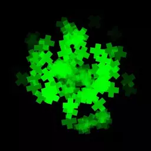
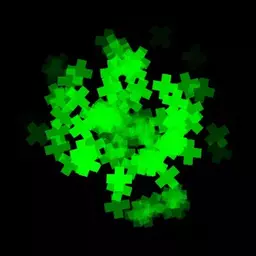
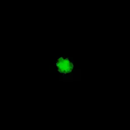
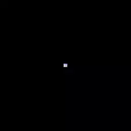
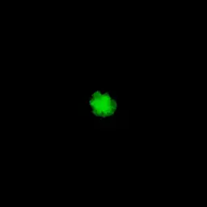
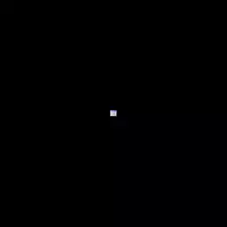
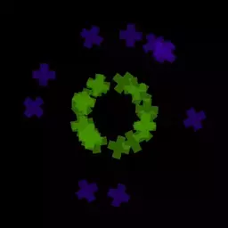

Emission Method - что это такое и как этим пользоваться
EmissionMethod - это свойство виджета типа ParticleEmitter. От метода эмиссии зависит, по какому принципу частицы будут "вылетать" из эммитера.
Доступны следующие типы эмиссии:
- NumberPerSecond
- ConstantNumber
- NumberPerBurst
Number свойство эмиттера, которое определяет количество частиц, по-разному в зависимости от метода эмиссии.
Оба этих свойства могут быть анимированы.
NumberPerSecond
Частицы генерируются непрерывно каждый кадр так, что за секунду генерируется Number количество частиц.
На примерах показано, как выглядит данный тип эмиссии, если Number равно 1, 10 и 100 частиц соответственно.
 

ConstantNumber
Каждый раз, когда текущее число частиц выпущенных данным эмиттером отличается от Number, за один кадр генерируется Number - particles.Count количество частиц. В случае, если данное число отрицательно — частицы будут удалены. Таким образом, анимируя Number можно удалять и снова генерировать частицы с этим методом.
Частицы сгенерированные методом ConstantNumber имеют бесконечное время жизни. Это реализовано так, что когда их время жизни кончатся, оно начинается снова, то есть анимация частицы начнётся заново согласно присвоенному ей при генерации ParticleModifier и тому как там анимированы свойства частицы.
На примерах показано, как выглядит данный тип эмиссии, если генерировать 1, 10 и 100 частиц соответственно.
 



NumberPerBurst
За один кадр генерируется Number количество частиц по триггеру со значением Burst (анимируемое свойство ParticleEmitter с названием Action).

На примере показано, что сначала генерится 5, затем 10, 20 частиц, вплоть до 50 (для наглядности были использованы разные цвета). Все эти "импульсы" были вызваны через Action у одного эммитера.
Таким образом анимируя Number и Action можно с точностью до одной частицы управлять тем сколько частиц на каком кадре анимации генерируется.
Сцена с примерами
В сцене Particles.tan есть примеры использования всех описанных методов эмиссии. Нужно лишь включить нужный фрейм. Класть в ../Citrus/Examples/EmptyProject/Data и запускать из EmptyProject (работает везде, где есть Citrus)